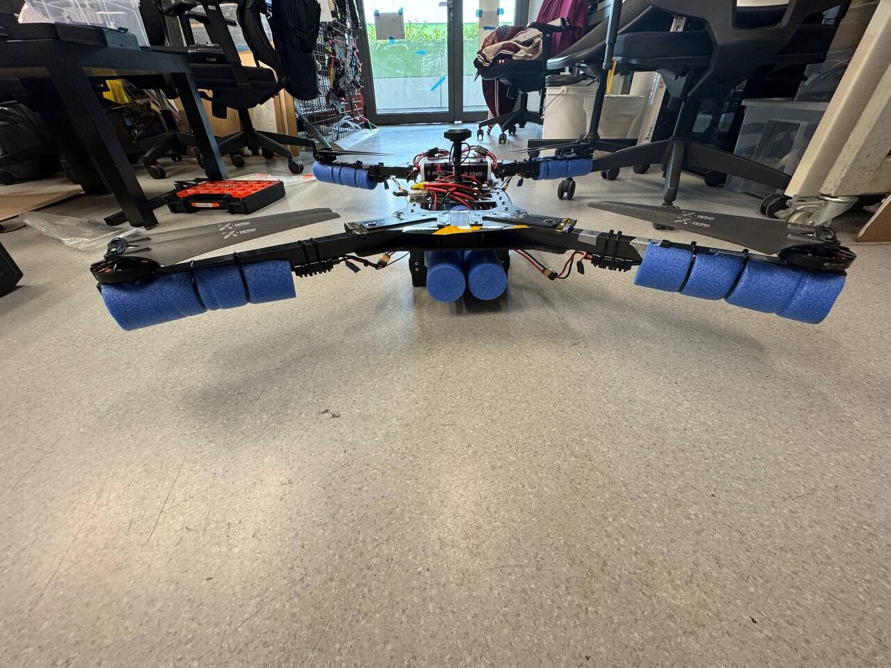
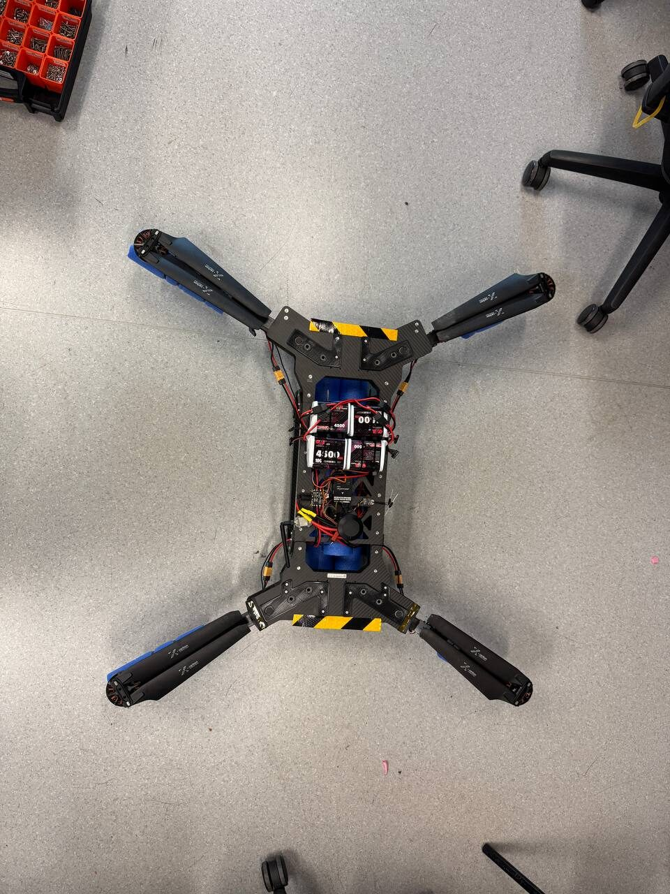
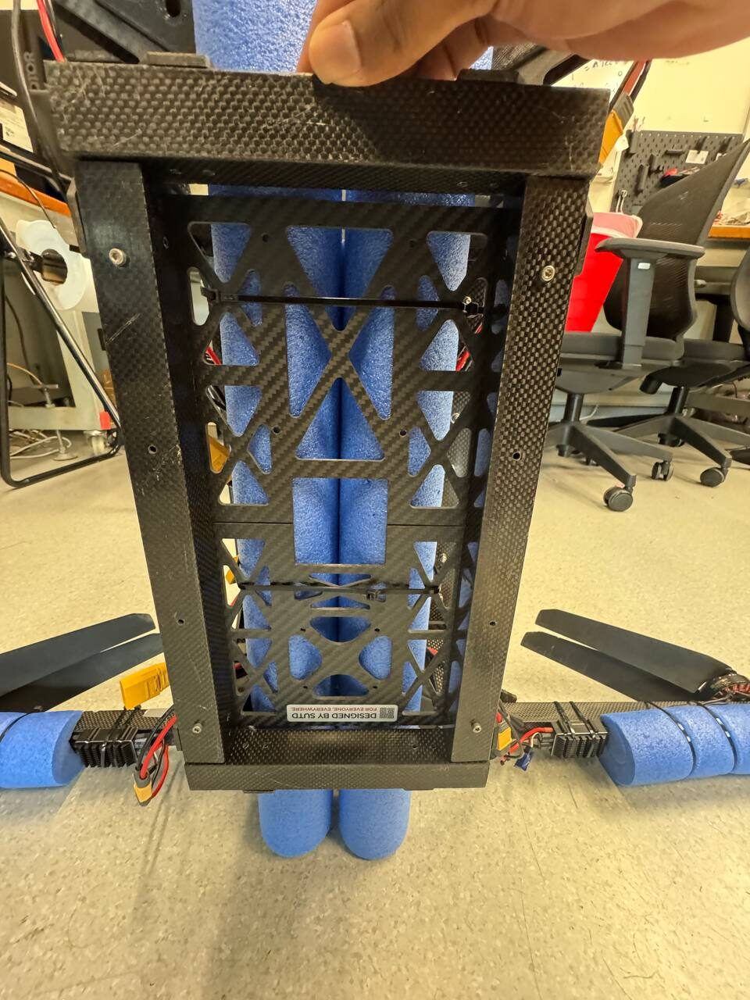
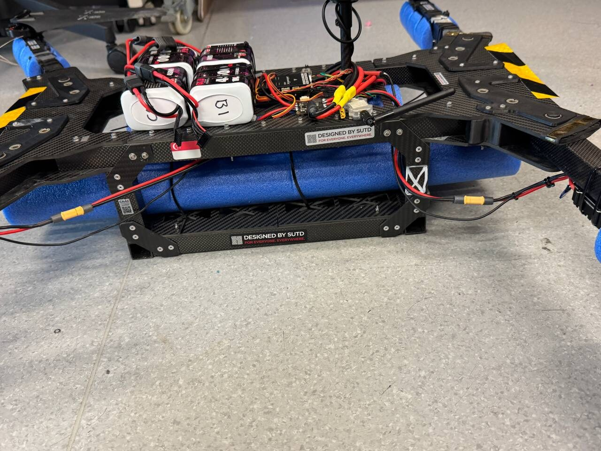
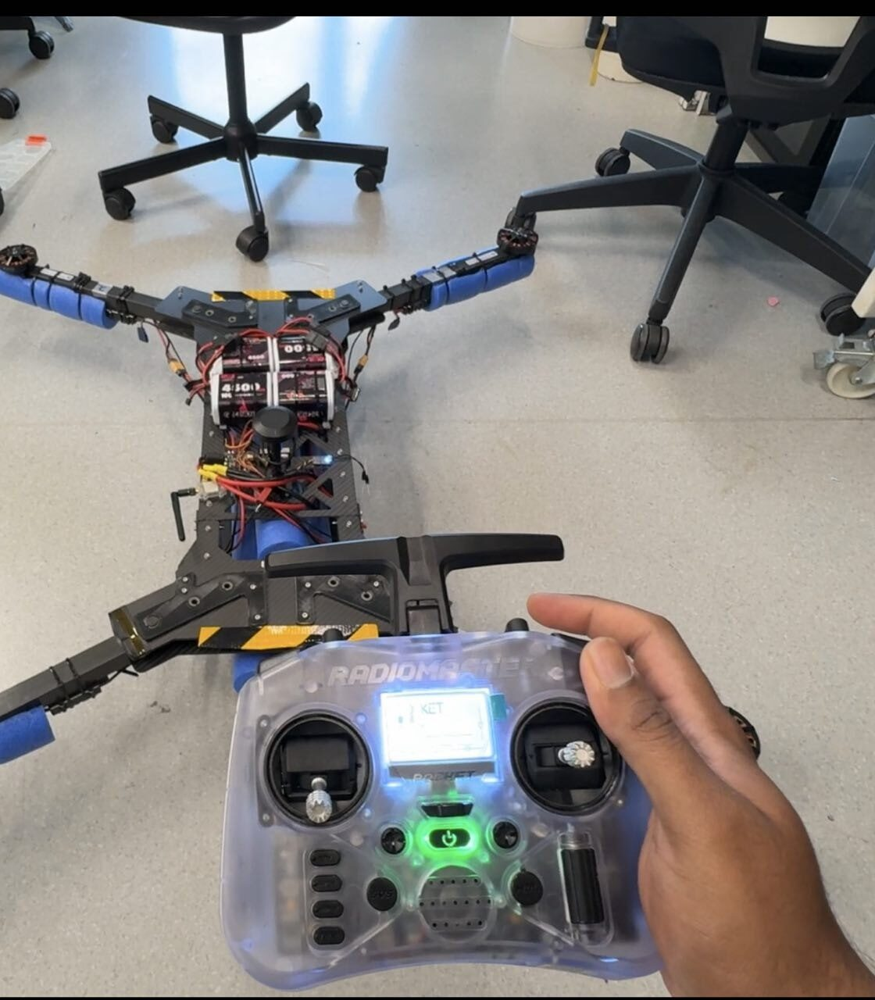
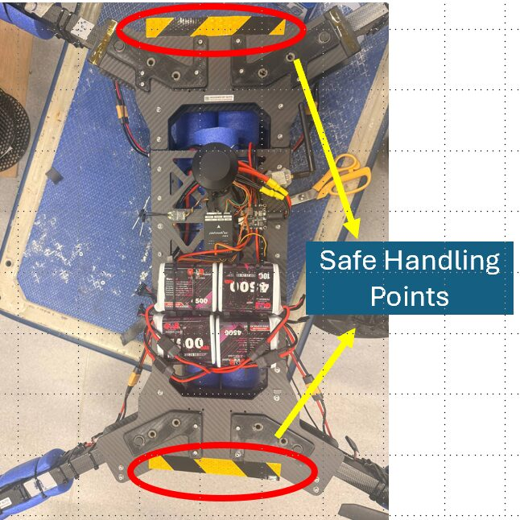

Vehicles / Quadrotor
22 inch quadrotor
Built in the lab around a Pixhawk 6C mini. It reads the buoy field from above, relays the route to the boat, and carries resource tins to the delivery platforms. It also has to float, because part of the course is water.
Airframe
A custom 22 inch quadrotor. Carbon arms and plate, 22.4 by 8 inch two blade propellers, and foam flotation strapped along the arms and the body so the aircraft stays upright and recoverable after a ditching. Two configurations are declared: the base aircraft, and the base aircraft with the tin grabbing assembly fitted.
- TypeCustom quadrotor, multirotor
- Dimensions98 x 89 x 29 cm, 129 cm diagonal
- Empty mass6.6 kg
- Operating mass6.8 kg with the delivery assembly
- Propellers22.4 x 8 in, two blade, polymer and carbon
- Flight controllerPixhawk 6C mini, ArduPilot
- Launch and recoveryVertical from the pontoon, water ditching if needed




Power and endurance
Four 6S1P lithium ion packs in parallel, 4,500 mAh each, 18,000 mAh at 22.2 V in total. Flight testing at the delivery configuration mass gives about 18 minutes, so missions are planned to land by 15 with roughly three minutes in reserve.
| Stage | Threshold | Behaviour |
|---|---|---|
| Take-off gate | 90% | Team procedure: no launch below this state of charge |
| Low battery | 30% | Warning and a return to launch prompt to the pilot |
| Critical battery | 20% | Automatic land, controlled descent at the current position |
| Planned landing | 30% | Missions are planned to land with at least this reserve |
Control and telemetry
The manual link is a RadioMaster transmitter with a built in ExpressLRS module, paired to a receiver on the aircraft. It is independent of the ground station: the pilot can take off, fly and land with the laptop switched off. The ground station runs Mission Planner for monitoring, mission upload and autonomous mission management, and the operator console reports the aircraft to RoboCommand at 2 Hz along with the other two vehicles.
- Manual linkExpressLRS 2.4 GHz, frequency hopping
- Transmit power50 mW setting, about 0.08 W EIRP
- Telemetry2.4 GHz to Mission Planner
- Flight modesStabilise, AltHold, Loiter, Auto, Land, RTL
- Declared ceiling50 m above mean sea level
- GeofencePolygon with a 4 m internal buffer
Aircraft telemetry is also relayed for Singapore's network remote identification requirements, so the heartbeat has to carry a complete field set every time. That is one of the reasons the RoboCommand client fills flight phase, altitude and heading on every report rather than only when they change.

Failsafe behaviour
| Trigger | Detection | Response |
|---|---|---|
| Manual link loss | 5 s without valid input | Land: controlled descent at the current position, disarm on touchdown |
| Telemetry loss | 5 s without a heartbeat | Land, with the pilot keeping manual control throughout |
| Navigation loss | 5 s without position | Land |
| Geofence reached | Polygon fence with a 4 m buffer | Brake and hold at the boundary, in manual and in autonomous flight |
| Ceiling reached | Fence altitude limit | Hold at the declared ceiling even when commanded above it |
| Mission abort | Ground station command or the pilot's mode switch | Loiter or return to launch. A scored attempt does not resume after a manual takeover |
The emergency stop on the transmitter cuts the motors immediately and works on the ground and in the air. Used in flight it produces an uncontrolled descent, so it is reserved for the case where continued flight is the greater hazard.

Delivery payload
Tasks 2 and 3 both end with a tin on a coloured circle. The delivery assembly is a removable tin grabbing mechanism of about 0.20 kg on an underside mount, powered from the main battery. The mount is drilled and the aircraft flies with it fitted; the grabber itself is the part still being finished.
The delivery tins are aluminium cans of 40 to 50 g coated in red, green or blue. The platforms are 2 m squares with 60 to 70 cm circles in the handbook's specified colours, which is what the simulator draws and what the perception work targets.
Flight evidence
These are the flights submitted for the aerial proof of readiness. Each one runs start to finish with no cuts, which is what section 3.1.1 asks for.
Takeoff, the published pattern and landing, flown in Auto with the mode shown on the ground station.
The same pattern flown by the pilot, with takeoff above 3 m and a landing back on the pad.
Commanded past the boundary, the aircraft brakes and holds at the fence.
The transmitter is switched off in flight. Five seconds later the aircraft lands itself.
In the pool, floating upright on its foam.
Motor order and direction checked on the bench before flight.